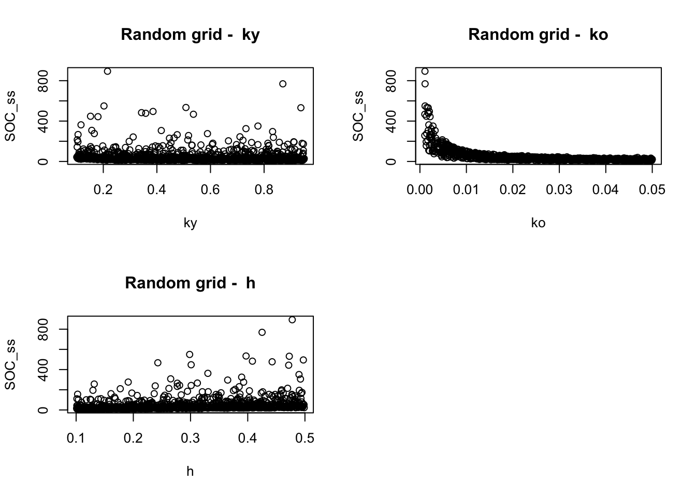

You should try to understand the interactions between model parameters and the model outputs. In particular: * For a given input levels and and a given measured SOC, what are the possible parameter combinations? And why?
First, we should write down a function for the model we want to explore. In this case, we want to explore the equilibrium point of the ICBM model, and we can therefore use the analytical solution we have found in the previous sections.
# Define the steady state model
ICBM_ss <- function(I, ky, ko, h){
Y_ss <- I/ky
O_ss <- h*I/ko
SOC_ss <- Y_ss + O_ss
return(SOC_ss)
}Ok, so we have defined the model. Now we can explore the model
parameter space. The model parameter space is the space defined by the
model parameters. In this case, we have 4 parameters: I, ky, ko, h. We
can explore the model parameter space by varying the parameters and
studying the response of the model.
For simlicity, in this case we can assume I (the inputs) to be constant,
equal to 2 tons ha\(^{-1}\), and
therefore study the parameter space defined by ky, ko, and h.
The object we need to run the exploration is a matrix where each column corresponds to a parameter, and each row to one combination of possible parameter values. For a regular grid. we can use the R function expand.grid to create a matrix of parameters. We can then use the function apply to run the model for each parameter combination.
parameters_regular <- expand.grid(ky = seq(from=0.1, to=0.95, length=10), ko = seq(from=0.001, to=0.05, length=10), h = seq(from=0.1, to=0.5, length=10))
#show the first rows of the data frame
head(parameters_regular)## ky ko h
## 1 0.1000000 0.001 0.1
## 2 0.1944444 0.001 0.1
## 3 0.2888889 0.001 0.1
## 4 0.3833333 0.001 0.1
## 5 0.4777778 0.001 0.1
## 6 0.5722222 0.001 0.1You can see here we are building a regular grid of length 10. The function expand.grid creates a matrix of all possible combinations of the parameters, and the dimensions of the resulting matrix:
dim(parameters_regular)## [1] 1000 3corresponds to 10 $ $ 10 $ $ 10 = 1000, which is the number of possible combinations of the parameters, and 3 which is the number of parameters in our model
We can also explore the model parameter space by using a random grid of parameters.
parameters_random <- data.frame(ky= runif(1000, min=0.1, max=0.95), ko=runif(1000, min=0.001, max=0.05), h=runif(1000, min=0.1, max=0.5))
#show the first rows of the data frame
head(parameters_random)## ky ko h
## 1 0.7880907 0.03916802 0.4551808
## 2 0.1339247 0.01707789 0.4812853
## 3 0.2377892 0.00558585 0.1513981
## 4 0.2897819 0.02903108 0.1448264
## 5 0.2462356 0.02648041 0.1744476
## 6 0.8990334 0.03028364 0.3277599The function runif creates a random grid of parameters between the requested intervals, and the dimensions of the resulting matrix:
dim(parameters_random)## [1] 1000 3are still the same as parameters_regular, but the
parameter combinations are now random.
We can now use the matrices we just created to run the model for each parameter combination. We could use the function apply to do so, but I will use a for loop for better readability
# Create a data frame tostore the results from the regular grid
results_regular <- c()
# run a loop for each parameter combination of the regular grid
for(i in 1:nrow(parameters_regular)){
results_regular[i] <- ICBM_ss(2, parameters_regular[i, "ky"], parameters_regular[i, "ko"], parameters_regular[i, "h"])
}
# Create a data frame tostore the results from the random grid
results_random <-c()
# run a loop for each parameter combination of the random grid
for(i in 1:nrow(parameters_random)){
results_random[i] <- ICBM_ss(2, parameters_random[i, "ky"], parameters_random[i, "ko"], parameters_random[i, "h"])
}We can now plot the parameter space and the response of the model.
One possibility is to try to plot the respoinse surface, but the problem
is that we have a 4-dimensional space and we can only visualize 3
dimensions. We can select some parameters, for example ky
and ko, plotting them against the response
(SOC_ss). We can use the function plot3d from the package
rgl to do so.
In order to run this code, you will need to install and load the
package scatterplot3d
install.packages("scatterplot3d")And now load it and plot the results:
library(scatterplot3d)
# Plot the regular grid
scatterplot3d(parameters_regular$ky, parameters_regular$ko, results_regular, xlab="ky", ylab="ko", zlab="SOC_ss", main="Regular grid")You can see one of the problems in this visualization is that for
each combination of ky and ko we do not have a
single value of SOC_ss (since there is also the variation
of h), but a range of values.
An easy solution for plotting multidimensional parameter spaces is to
use dotty plots, where we plot the response of the model as a function
of each parameter.
par(mfrow=c(2,ceiling(dim(parameters_random)[2]/2)))
for( i in 1:dim(parameters_regular)[2]){
plot(parameters_regular[,i], results_regular, xlab=names(parameters_regular)[i], ylab="SOC_ss", main=paste("Regular grid - ", names(parameters_regular)[i]))
}Here you can start appreciating the limits of the regular grid exploration. If you plot in the same way the random grid exploration, the plot becomes clearer:
par(mfrow=c(2,ceiling(dim(parameters_random)[2]/2)))
for( i in 1:dim(parameters_random)[2]){
plot(parameters_random[,i], results_random, xlab=names(parameters_random)[i], ylab="SOC_ss", main=paste("Random grid - ", names(parameters_random)[i]))
}
By considering the above plots, you should now answer the following questions, relatively to the random grid exploration, in written form:
I now want you to do the same, but considering the model in its transient form. I want you to explore the response of the model after 10 years of simulation, and to do so you will have to modify the model function to include a time variable. I will write for you the model function incorporating the ICBM ODE into a solver
In order to run this code, you will need to install and load the
package deSolve
install.packages("deSolve")Now the solved ICBM function:
library(deSolve)
ICBM_transient <- function(init, I, ky, ko, h, t){
# ICBM model
# I: input of organic matter
# ky: decomposition rate
# ko: mineralization rate
# h: humification rate
# t: time
# ODE system
ICBM <- function(times, init, parms){
with(as.list(c(init, parms)),{
dY <- I - h*ky*Y
dO <- h*ky*Y - ko*O
return(list(c(dY, dO)))
})
}
# Parameters
parms <- c(ky=ky, ko=ko, h=h)
# Solve the ODE
out <- ode(y=init, times=t, func=ICBM, parms=parms)
# Return the steady state SOC
return(out)
}What changed now is that since we are exploring what happens between two time points, we how have to define the time vector and most importantly the initial conditions for the ODE solver.
# Initial conditions
init <- c(Y=2, O=40)The initial conditions are the state of the model at the beginning of the simulation, so in our case the size of the two organic matter pools.
The time vector can be anything defining the time where we want to run the model, for example for the first 10 time steps:
# Time vector
t <- seq(0, 10, by=1)We can utilize the random parameter matrix we prepared before to explore the response of the model in the parameter space. We will use the same approach as before, but now we are just going to use the transient function. we want to know the SOC after 10 years of simulation for each parameter combination.
One problem is that in order to run the solver we need a vector of regular time steps, but we are interested only in the value at t=10. Runining the model reveals the nature of the output:
ICBM_transient(init, I=2, ky=0.3, ko=0.01, h=0.34, t=t)## time Y O
## 1 0 2.000000 40.00000
## 2 1 3.707436 39.89324
## 3 2 5.249305 39.95228
## 4 3 6.641660 40.15948
## 5 4 7.898997 40.49896
## 6 5 9.034410 40.95636
## 7 6 10.059719 41.51876
## 8 7 10.985604 42.17448
## 9 8 11.821707 42.91300
## 10 9 12.576732 43.72485
## 11 10 13.258542 44.60146We can now build our loop considering only time=10. We also want the total SOC, so we need to sum up the two pools at time = 10. Let’s test one solution:
sum(ICBM_transient(init, I=2, ky=0.3, ko=0.01, h=0.34, t=t)[10,2:3])## [1] 56.30158It seems to work, we can now build our loop:
#define the time
# Create a data frame tostore the results from the random grid
results_random_transient <-c()
# run a loop for each parameter combination of the random grid
for(i in 1:nrow(parameters_random)){
results_random_transient[i] <- sum(ICBM_transient(init, I=2, ky=parameters_random[i, "ky"], ko=parameters_random[i, "ko"], h=parameters_random[i, "h"], t=t)[10,2:3])
} …and from here I want you to proceed alone. By working with R, you should answer the following questions: